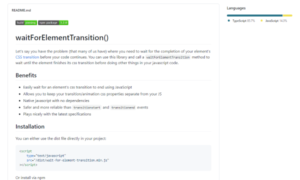
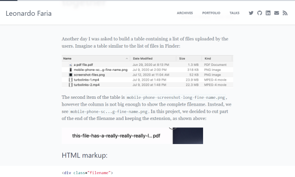
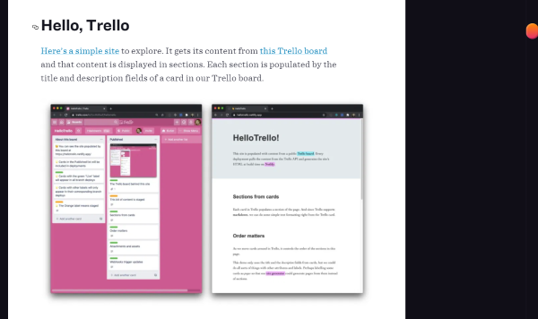
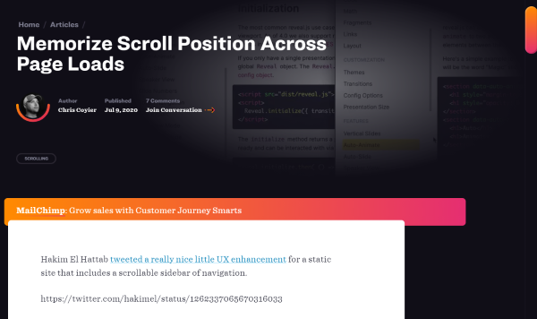
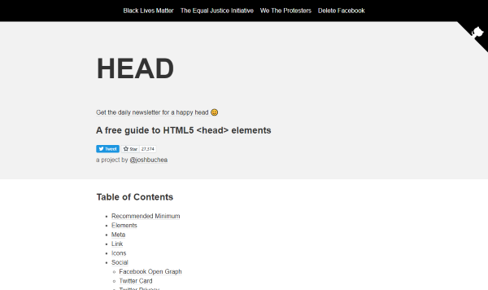
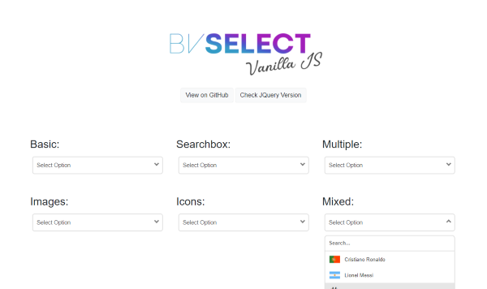
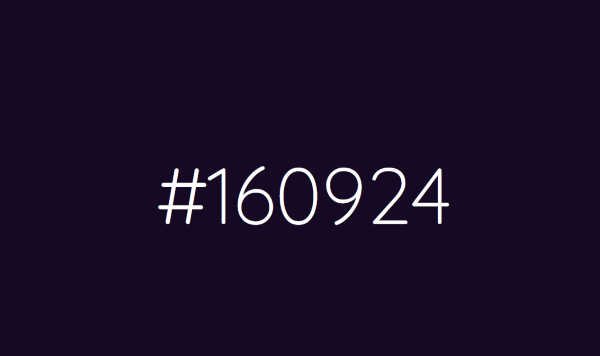
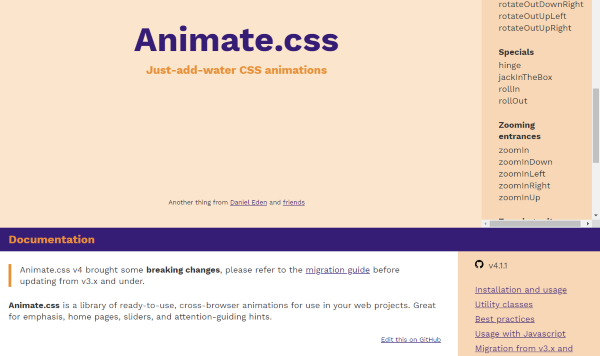

It is so amazing how many cool stuff developers around the world are producing these days. Or they do what they always do, but I have more time to read about their smart ideas and solutions. This month I have 8 pearls for you:
- waitForElementTransition()
- Using Flexbox and text ellipsis together
- Using Trello as a Super Simple CMS
- Memorize Scroll Position Across Page Loads
- A free guide to HTML5 <head> elements
- BVSelect - Vanilla JS
- A clock that represents the time as hex color values
- Animate.css - Just-add-water CSS animations
waitForElementTransition()
by Mark Kennedyhttps://github.com/mkay581/wait-for-element-transition
In these days a good UI doesn’t do without some animations or transitions and it is always advisible to use CSS for it, if possible. Marks shows us with his solution, how to wait in JavaScript for a transition to finish, before we continue to do something else in JS.
Using Flexbox and text ellipsis together
by Leonardo Fariahttps://leonardofaria.net/2020/07/18/using-flexbox-and-text-ellipsis-together/
In case you offer downloads with very long file names from time to time, you might use CSS’s ellipsis to cut it down. But you always loose the last three chars, the file extension. Leonardo show us, how to avoid that, by using a clever mix of ellipsis and flexbox.
Using Trello as a Super Simple CMS
by Phil Hawksworthhttps://css-tricks.com/using-trello-as-a-super-simple-cms
As I love Trello and use it daily, among others as a reading list (see Add website to Trello card the better way), I can’t wait to try Phils approach to process Trello boards automatically.
Memorize Scroll Position Across Page Loads
by Chris Coyierhttps://css-tricks.com/memorize-scroll-position-across-page-loads/
Chris shows Hakim El Hattab’s trick, how to store the current scroll position and restore it when user comes back. Simple, but a gain in usability.
A free guide to HTML5 <head> elements
by Josh Bucheahttps://htmlhead.dev
Doing your Web Developer job right, means you have to be aware of the META tags in your HTML. htmlhead.dev is a good reference, because it lists and describes mostly all known META tags.
BVSelect - Vanilla JS
by Bruno Vieirahttps://bmsvieira.github.io/BVSelect-VanillaJS
There are many HTML/Javascript driven dropdowns out there. So has Bruno, but his solution don’t even looks nice, it is written in ES6, has no dependencies and is dead simple to use.
A clock that represents the time as hex color values
by Jamel Hammoudhttps://github.com/JamelHammoud/hextime
The time is shown mostly as a six digit number … Hours, Minutes and Seconds, with a leading 0. Color Hex codes have also 6 digits and Jamel the idea to bring both together…
Animate.css - Just-add-water CSS animations
by Daniel Edenhttps://animate.style
Daniel and his buddies offers an Stylesheet with dozens of cool and easy to use text animations.



Comments